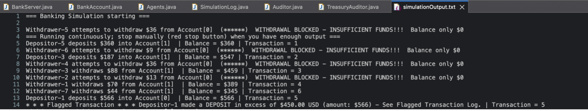

Project Description
This project simulates a banking system using multiple cooperating Java threads that perform deposits, withdrawals, transfers, and auditing on shared accounts. Mutual exclusion is enforced using ReentrantLocks rather than synchronized methods. Withdrawals block when funds are insufficient until deposits occur, modeling real-world concurrency coordination. The system also flags large transactions and logs them to a CSV file with timestamps and transaction IDs.
Skills Learned / Used
- Java multithreading with Executor services and thread pools
- Synchronization using ReentrantLock
- Cooperating threads with blocking and signaling logic
- Transaction monitoring and CSV logging
- Concurrency-safe shared resource management